time is a focus timer for people who want to do one thing at a time. Name the things you
actually spend your day on, give each a daily goal, and start one with a tap — starting
one pauses the rest, so your day stays honest about where the hours went.
No account. No tracking. Your focus data never leaves your phone.
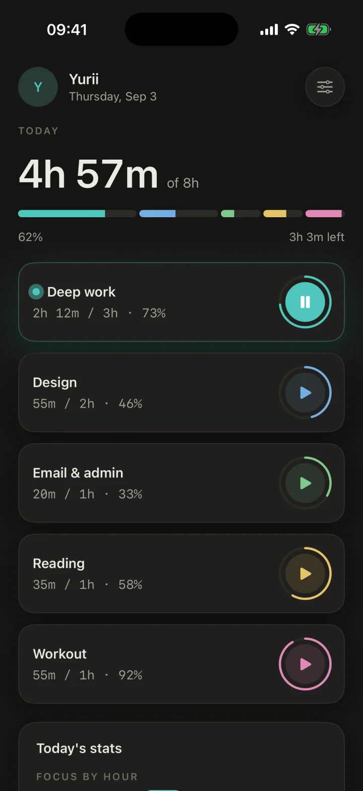
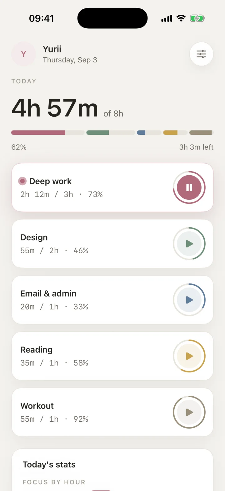
A look inside
Every screen, as it actually looks
Real screenshots from the app running on iPhone — the same numbers you'd see after a day of tracking, because they're all derived from logged sessions.
HomeToday's total, the goal bar and one card per focus item.
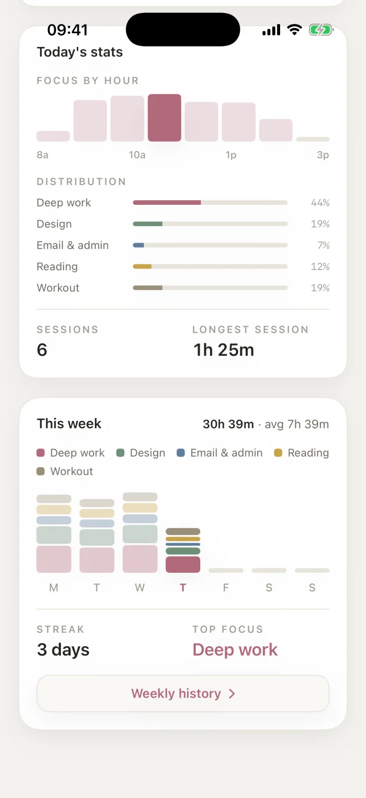
Today's statsFocus by hour, distribution, sessions, streak.
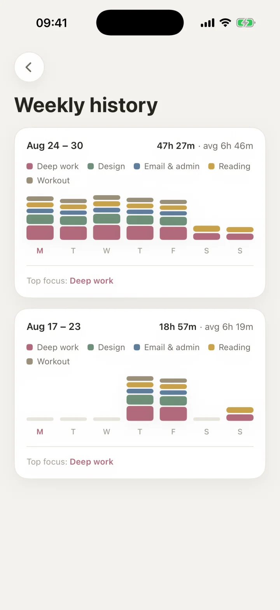
Weekly historyPast weeks, newest first, with stacked day bars.
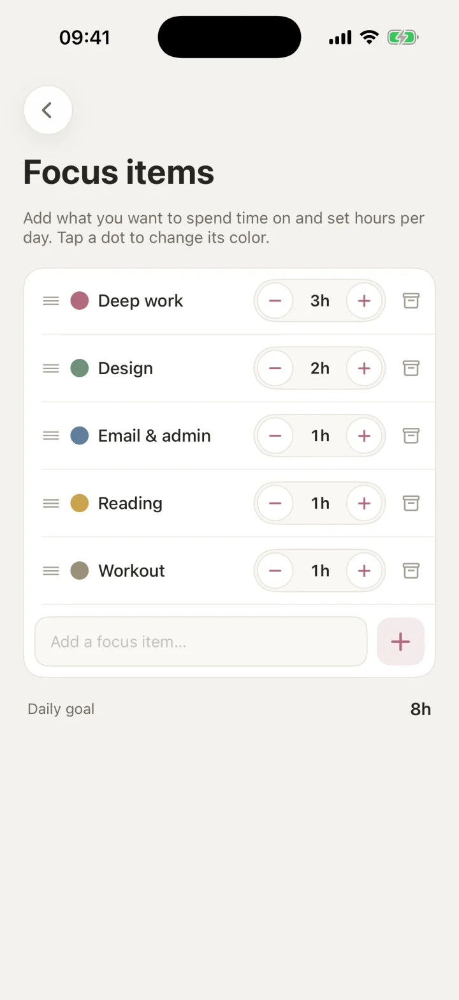
Focus itemsHours per day, colors, order — and the goal sum.
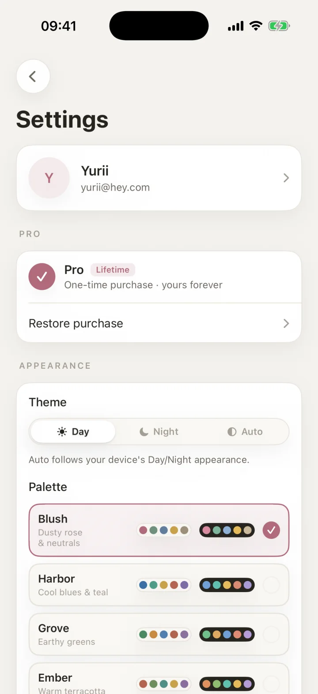
SettingsTheme, palettes, tracking, Pro — all in one scroll.
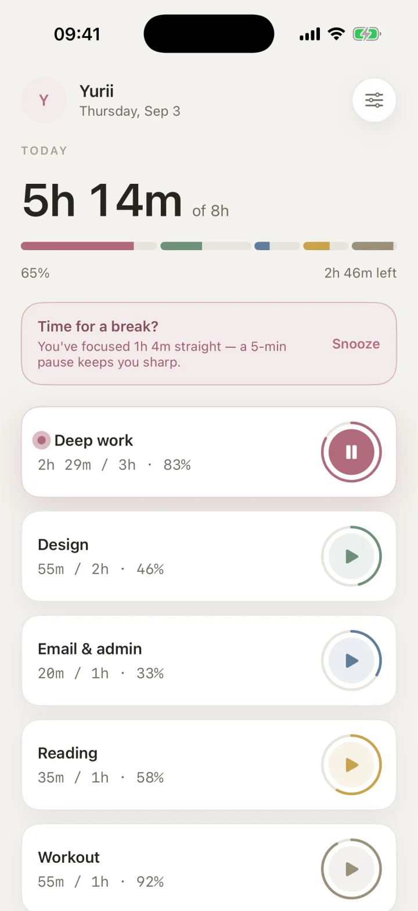
Break nudgeA gentle prompt after a long unbroken run.
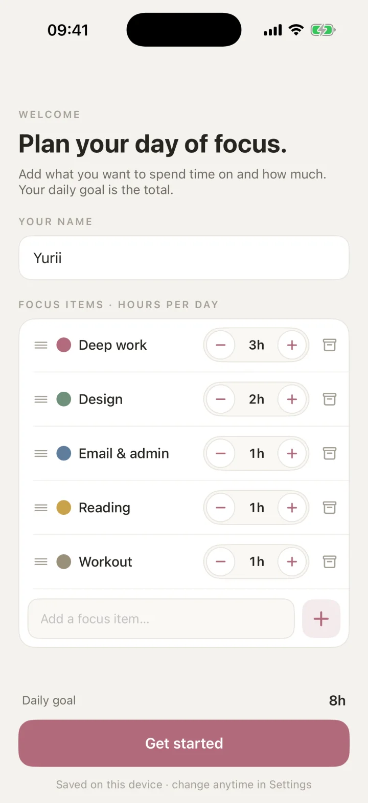
SetupName, items, hours. That's the whole configuration.
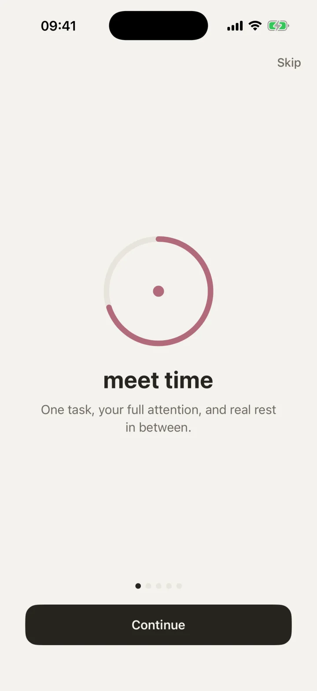
WelcomeA five-screen intro, replayable from Settings.NightThe same Home, in Night with the Lagoon palette.
Scroll for more screens
How it works
Start one thing, and the day writes itself
Everything on screen is derived from sessions you actually logged — no estimates, no manual edits, nothing to tidy up afterwards.
01 · Focus items
Name what you spend time on, once
Add the things you really do — deep work, design, email, reading, a workout — and give each a daily hours goal and a color. Your overall goal is simply the sum of them.
Steppers for hours per day, drag to reorder, tap a dot to recolor
Archive instead of delete: the item leaves Home, its history stays
Up to 3 items on Free, up to 8 with Pro
02 · One at a time
Tap to start — the rest pauses itself
Starting a focus item stops whatever was running, so two timers can never quietly overlap. Each run is logged as a session and the totals move as you work.
Time keeps running in the background and across relaunches
A forgotten run auto-stops at that item's daily goal
Sessions split at midnight, so a late night lands on the right day
03 · Your day, explained
Stats that say where the hours went
A focus-by-hour histogram, the split between items, how many sessions you ran and how long the longest one was — plus the week so far, your streak and your top focus.
Every number recomputed from logged sessions, live
Streak counts the consecutive days you actually hit the goal
The weekly card opens a full history of past weeks
04 · Look back
Weeks you can compare at a glance
Weekly history lists past weeks newest first, each with its total and daily average, a legend of the items that made it up, and stacked bars for every day.
Archived items are still attributed, and badged as archived
Totals and averages per week, with the week's top focus
Outside the app
The running timer follows you around iOS
While a focus item runs, it shows up where you already look — no need to reopen the app to check or to stop it.
Deep work47:12
2h 12m of 3hPause
Lock Screen Live Activity
The item's name and color, a self-updating count-up clock, goal progress and an inline Pause button — right on the Lock Screen.
Deep work47:12
Dynamic Island
The same run, compact. It starts when you start, updates in place when you switch items, and ends when you pause.
2h 12mDeep work
Today · 4h 57m of 8h
9:41
Home Screen & StandBy widgets
A small glance with the ring and today's time, a wider card with the clock and the segmented goal bar, and a Lock Screen ring for StandBy.
What it does
A timer built around focus items, not tasks
No projects, no tags, no backlog to groom. Just the handful of things you want your day to be made of.
Focus items, not just a timer
Create the things you really spend time on, each with its own color and a daily hours goal. Your overall goal is simply the sum of them.
One thing runs at a time
Starting a focus item pauses whatever else was running. Every run is logged as a session, so your totals always reflect what really happened.
Today, at a glance
Home shows today's total against your combined goal, a segmented bar for each item's share, and a card per item with its own start/pause ring.
Stats that explain your day
Focus-by-hour histogram, per-item distribution, session count, longest session, current streak and top focus — all computed from your logged sessions.
Lock Screen & Dynamic Island
While an item runs, a Live Activity shows its name, color, a live count-up clock and goal progress — with an inline Pause button, right on the Lock Screen.
Home Screen widgets
A small “Today” glance and a wider card with the current time and the day's segmented goal bar, for your Home Screen and StandBy — plus a Lock Screen ring.
Break reminders
An optional nudge — in the app and as a local notification — after a stretch of unbroken focus you choose, so a long run doesn't quietly turn into burnout.
Archive, don't delete
Retire an item and it leaves Home and the goal sum while its sessions stay in your stats and history — restore it whenever you want it back.
Nine palettes, Day or Night
Day, Night or Auto, with palettes from calm neutrals to bold accents — recoloring the whole app, your item colors, and even the app icon.
Appearance
Pick a palette you'll want to look at
Each palette recolors the app, the per-item color set and the app icon, in both Day and Night.
Blush · Day
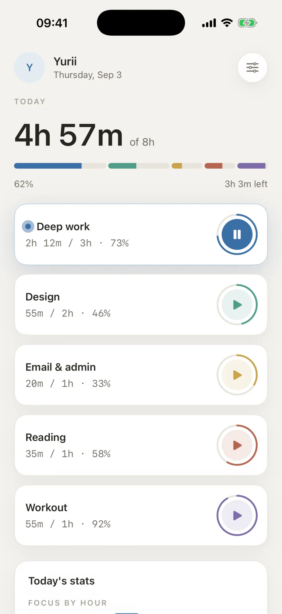
Harbor · DayLagoon · Night
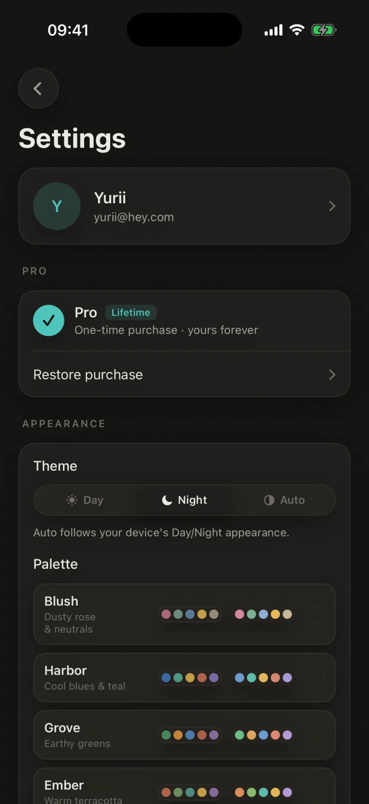
Picking one
Blush
Harbor
Grove
Ember
Dusk
Amber
Clay
Bloom
Lagoon
Privacy
Your focus data never leaves your phone
time has no server, no account and no networking code at all. Your focus items, sessions
and settings live on your device, stored with SwiftData — that's the whole architecture,
not a setting you have to find.
No account, no sign-in, anywhere in the app
No analytics and no third-party SDKs
No ads and no tracking across apps
Works fully offline — there's nothing to connect to
Pro is one purchase or a yearly plan — bought through the App Store, with no account to create. Family Sharing is enabled, and Restore Purchases is built in.
Free
Everything you need to start
Up to 3 focus items
The Blush palette, in Day, Night or Auto
Live Activity and Lock Screen ring widget
All stats, streaks and break reminders
Pro
One purchase, no account
Up to 8 focus items
All nine palettes, plus the matching app icons
Home Screen widgets, small and medium
Lifetime or yearly, with Family Sharing
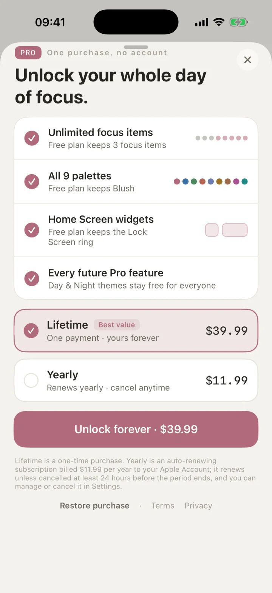
Questions
Good to know
Does time need an internet connection?
No. time works entirely offline — there's no networking in the app and nothing is ever uploaded.
Do I need to create an account?
No. There's no sign-in anywhere in the app, including for the Pro purchase — that goes through your Apple ID.
Can I run two focus items at once?
Deliberately not. Starting one pauses whichever item was running, so your logged time always reflects one thing at a time.
What happens if I forget to stop the timer?
A run auto-stops once it reaches that item's daily goal, and a session that crosses midnight is split so each day gets its own share. Both happen without you doing anything.
What do I lose if I don't buy Pro?
Nothing you've already recorded. Free gives you three focus items, the Blush palette, the Lock Screen ring and the Live Activity. If items go beyond the free limit they simply can't be started again — their history stays intact and still counts in your stats.
What do I need to run it?
An iPhone or iPad on iOS 17 or later. iOS 17 is the floor because the app is built on SwiftData and the Observation framework, which covers iPhone XS/XR/SE (2nd gen) and newer.
Are the screenshots real?
Yes — every screenshot on this page was captured from the app running on an iPhone, with a sample day of focus data. The Lock Screen, Dynamic Island and widget cards above are drawn illustrations of those surfaces.